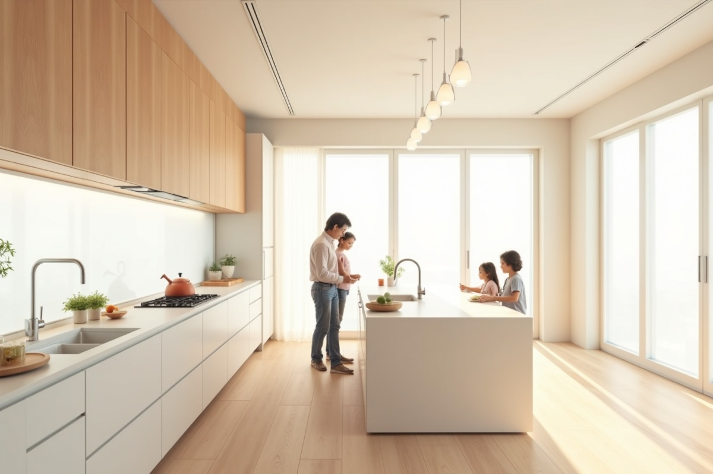

「リフォームに失敗したくない」「より良い住まいに改善したい」と考えている方へ。リフォームは人生でそう何度も経験することではないため、どこに注意すれば良いのか分からず不安になることも多いでしょう。本記事では、リフォームにおける一般的な注意点と、住み心地を大きく改善するための具体的なポイントを解説します。

リフォームで最も多い失敗の一つが「予算オーバー」です。希望を全て詰め込むと、あっという間に予算を超えてしまいます。「絶対に譲れないもの」と「あれば嬉しいもの」を明確にし、優先順位をつけておくことが重要です。また、予期せぬ修繕が必要になる場合に備え、予算の1〜2割は予備費として確保しておきましょう。
「大手だから安心」「知人の紹介だから大丈夫」と安易に決めるのは危険です。必ず複数社から見積もりを取り（相見積もり）、担当者の対応や提案力、そして見積もりの詳細さを比較してください。「一式」という表記が多い見積もりには注意が必要です。
キッチンリフォームでは、見た目の美しさだけでなく「使いやすさ」が鍵となります。「冷蔵庫とシンク、コンロの距離（ワークトライアングル）」を意識し、作業動線を短くすることで家事効率が劇的に改善します。また、収納は量よりも「出し入れのしやすさ」を重視しましょう。
古いお風呂の最大の悩みは「寒さ」と「カビ」です。ユニットバスへ交換する際は、断熱性能の高い浴槽や床を選びましょう。また、水はけの良い床材や、継ぎ目の少ない壁パネルを選ぶことで、日々の掃除が格段に楽になります。
リビングで盲点になりがちなのが「コンセントの位置と数」です。テレビ、掃除機、スマホの充電、季節家電など、使う場所を想定して配置しましょう。また、照明をシーリングライトだけでなく、ダウンライトや間接照明を組み合わせることで、シーンに合わせて雰囲気を変えられる快適な空間になります。
リフォームは「現在の不満解消」だけでなく、「将来の生活スタイルの変化」も見据えて行うことが大切です。例えば、段差の解消や手すりの下地を入れておく（バリアフリー準備）、子ども部屋を可変性のある間仕切りにするなど、10年後、20年後も快適に住める工夫を取り入れましょう。